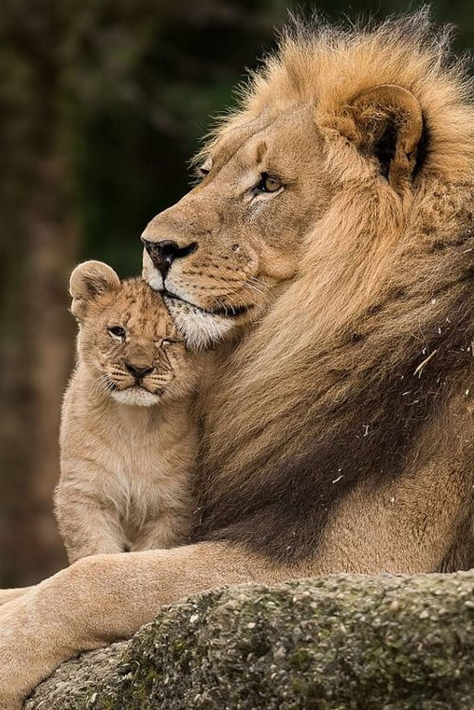
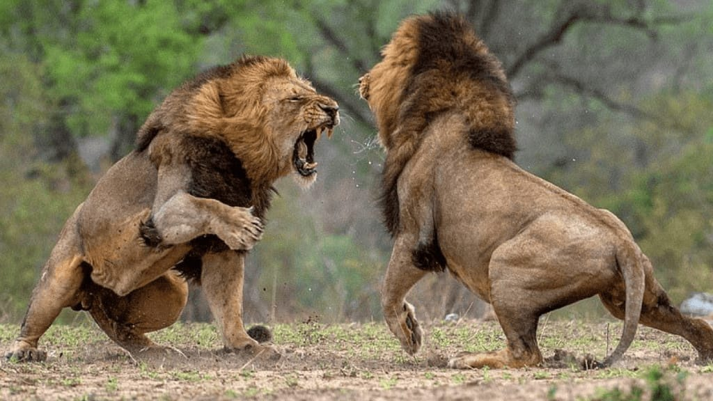

Fuerza Bruta y Megafauna
Más grandes y musculosos, los machos intervienen como "tanques" cuando la manada necesita derribar presas de gran tamaño (como búfalos del cabo o jirafas) que representarían un peligro mortal para las leonas.

La Melena como Indicador Visual
Una melena oscura y densa señala nutrición óptima y un sistema inmunitario fuerte. Las leonas prefieren machos con melenas oscuras para asegurar descendencia fuerte.
